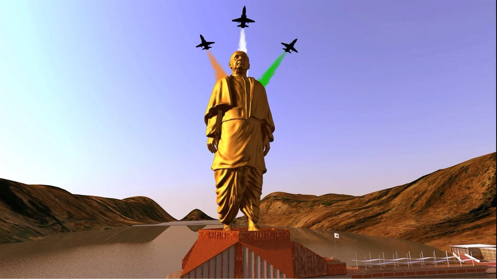

STATUE OF UNITY


The Statue of Unity is the world's tallest statue, with a height of 182 metres (597 feet), located near Kevadia in the state of Gujarat, India. It depicts Indian statesman and independence activist Vallabhbhai Patel (1875–1950), who was the first deputy prime minister and home minister of independent India and an adherent of Mahatma Gandhi. Patel is highly respected for his leadership in uniting 562 princely states of India to form the single Union of India. The statue is located in Gujarat on the Narmada River in the Kevadiya colony, facing the Sardar Sarovar Dam 100 kilometres (62 mi) southeast of the city of Vadodara. The project was first announced in 2010, and construction started in October 2013 by Indian company Larsen & Toubro, with a total construction cost of ₹27 billion (US$422 million). It was designed by Indian sculptor Ram V. Sutar and was inaugurated by the Prime Minister of India, Narendra Modi, on 31 October 2018, the 143rd anniversary of Patel's birth. Narendra Modi announced the project on 7 October 2013 to mark the beginning of his tenth year as the chief minister of Gujarat. A society named Sardar Vallabhbhai Patel Rashtriya Ekta Trust (SVPRET) was formed under the chairmanship of the Chief Minister of Gujarat, to execute the project. Statue of Unity Movement was started in 2013 to collect the iron needed for the statue by asking farmers to donate their used farming instruments. By 2016, a total of 135 metric tonnes of scrap iron had been collected and about 109 tonnes of it was used to make the foundation of the statue after processing. A marathon titled Run For Unity was held on 15 December 2013 in Surat and Vadodara in support of the project.